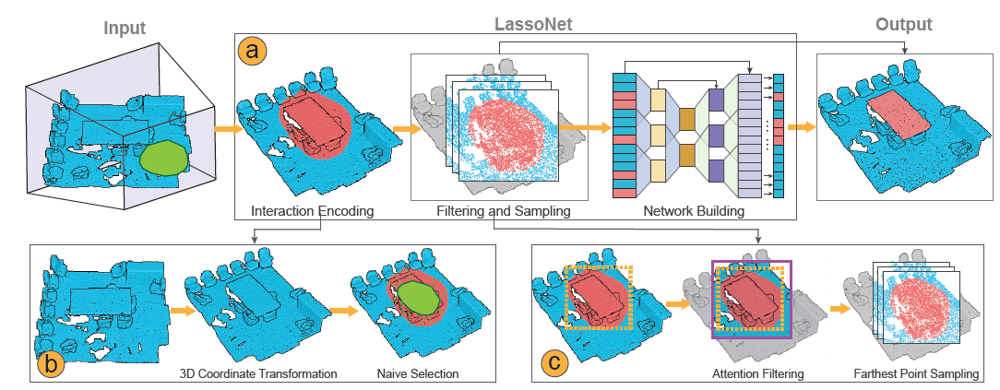
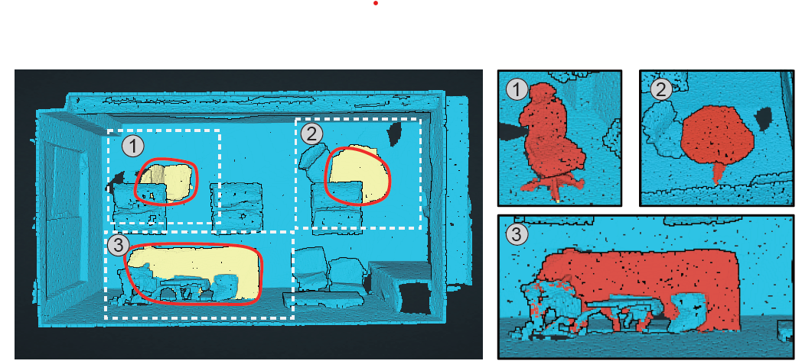
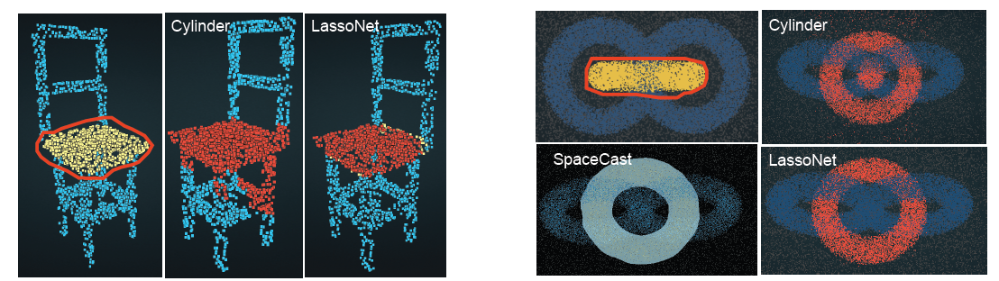

Selection is a fundamental task in exploratory analysis and visualization of 3D point clouds. Prior researches on selection methods were developed mainly based on heuristics such as local point density, thus limiting their applicability in general data. Specific challenges root in the great variabilities implied by point clouds (e.g., dense vs. sparse), viewpoint (e.g., occluded vs. non-occluded), and lasso (e.g., small vs. large). In this work, we introduce LassoNet, a new deep neural network for lasso selection of 3D point clouds, attempting to learn a latent mapping from viewpoint and lasso to point cloud regions. To achieve this, we couple user-target points with viewpoint and lasso information through 3D coordinate transform and naive selection, and improve the method scalability via an intention filtering and farthest point sampling. A hierarchical network is trained using a dataset with over 30K lasso-selection records on two different point cloud data. We conduct a formal user study to compare LassoNet with two state-of-the-art lasso-selection methods. The evaluations confirm that our approach improves the selection effectiveness and efficiency across different combinations of 3D point clouds, viewpoints, and lasso selections.



If you find this paper useful, please consider citing it.
@article{chen2020lassonet,
author = {Zhutian Chen and Wei Zeng and Zhiguang Yang and Lingyun Yu and Chi-Wing Fu and Huamin Qu},
title = {{LassoNet: Deep Lasso-Selection of 3D Point Clouds}},
journal = {IEEE Transactions on Visualization and Computer Graphics},
volume = {26},
number = {1},
pages = {788--798},
year = {2020},
doi = {10.1109/TVCG.2019.2934332},
}